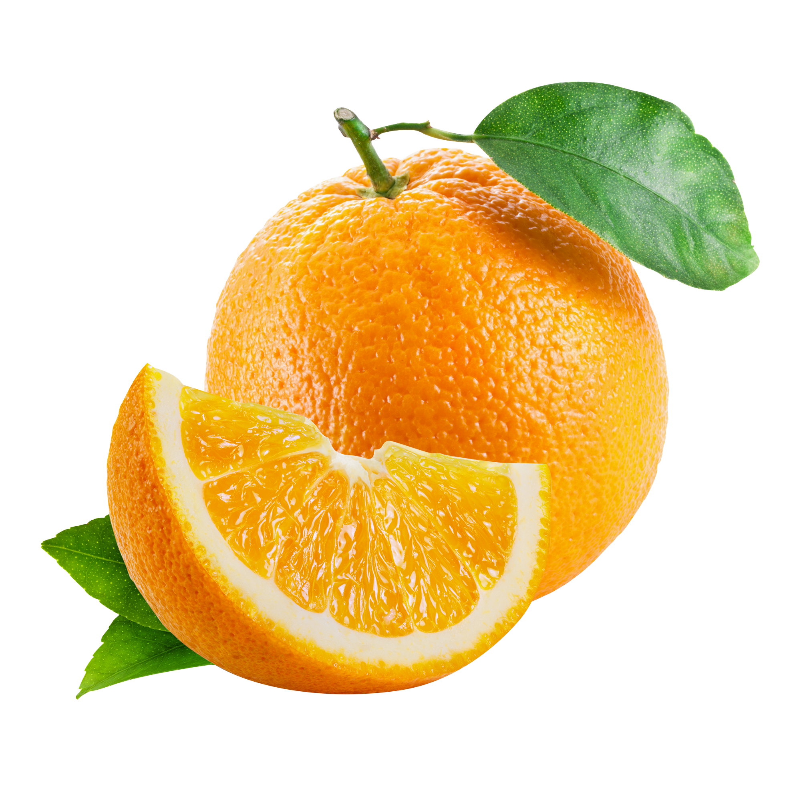
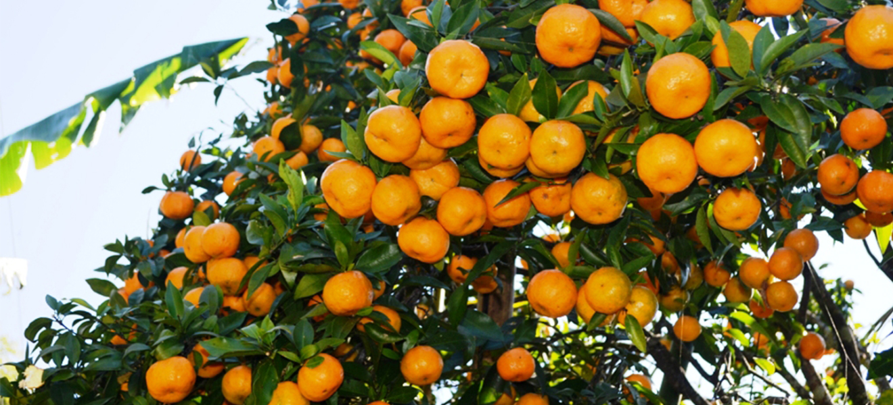

Our orange juice is made from the finest Sindhuli oranges, handpicked
at peak ripeness. Cold-pressed for freshness, it retains its natural sweetness,
vibrant color, and rich nutrients.
With no additives, it delivers pure
refreshment and a perfect balance of sweetness and tanginess straight
from Nepal’s orchards to your glass.
Some choices simply stand out. A blend of care, tradition,
and nature’s best creates a drink that feels as refreshing
as it tastes. Every sip tells a story of sunlit
orchards and
careful craftsmanship, bringing a balance of flavor and
purity that
turns an everyday moment into something special.
Our juice is made from sun-ripened Sindhuli
oranges with no additives—just pure, honest flavor.
It’s a natural refreshment you can feel good about
drinking every single day.
We work directly with local growers to ensure every bottle captures the vibrant taste of freshly piced oranges. Form orchard to bottle, freshness is our promise
Every glass is rich in essential vitamins like C,A and pottasium which fuels your body with natural energy and immune-boosting power.

© 2025 oj Nepal, Inc. All rights reserved.